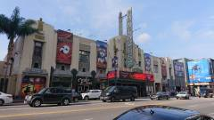

|
日曜だが他の出張者は何かの勉強会に参加するという。非常に心苦しく葛藤したが、冷静な判断により自分だけ断り全力で観光することにした。日曜だし…
やはりロスと言えば映画だろうと思い、好きな映画ゆかりの地を巡ることにした。
電車とバスを乗り継いで山の上の天文台へ。景色も展示も楽しかったが、一番の目的は映画ラ・ラ・ランドに登場していたこと。
ここからしばらくハイキングで、ラ・ラ・ランドのロケ地を巡る。
1時間ほど歩いて、ダンスシーンで有名な高台に到着。ベンチなどの小道具がなくても見覚えのある景色にちょっと感動。
元々観光スポットという感じではなく、ちょっと景色の良い山道の途中だったが、撮影演出次第であんな印象的なシーンになるのだな。
ハリウッドの看板近くを通り、高級住宅街(別荘街?)を抜けて山を下り、ハリウッドへ。
ハリウッド周辺は若干治安が悪そうで、マリファナも香る。
ここにもラ・ラ・ランドのロケ地 You Are the Star があったので、それを見届けて引き上げる。
| You Are the Star |
You Are the Star |
|
|

|
地図で見たイメージより町が広くて歩き疲れてくる。夕方は電車で海に出て食事。
夜、昼間の罪悪感からホテルで日本時間に合わせてガリガリ仕事したという。
|